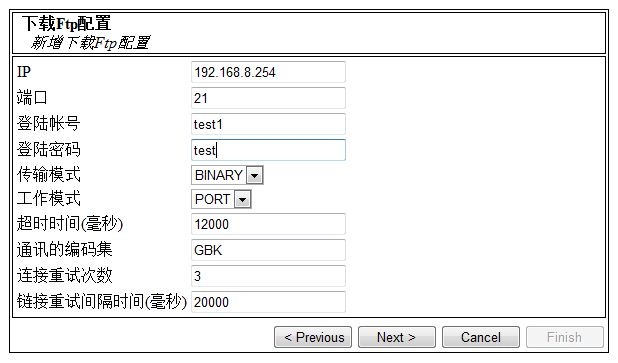
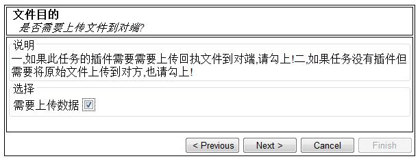

内容大纲
通常
它是做什么的?
FD2其实就是一个文件传输平台.......
支持什么模式?
- 远端FTP-->下载-->上传--->远端FTP
- 本机-->扫描-->上传--->远端FTP
- 远端FTP-->下载-->转移--->本机
- 本机-->扫描-->转移--->本机
有什么特点?
- 断点续载，断点续传(需要目标Ftp服务器的支持)
- 配置方便
- 精确的任务调度时间控制
运行要求?
运行环境需要jre1.5+
如何获得最新版本?
联系:zhangqi8@asiainfo-linkage.com
如何监控程序?
本机运行:jconsole [运行主机IP]:8888
需要注意什么?
部署路径不能含有中文
如何管理它?
如何新增一个任务?
1.文件的获取方式
2.如果上一步你选择了'需要下载数据的选项',就会出现下面的选择文件提供方Ftp配置的界面。你可以选择已有的Ftp配置信息或者新增加一个Ftp配置信息

3.如果你选择需要新增一个Ftp配置,就会出现以下的界面

4.文件获取方式配置完后，就是文件目的方式的配置了。如果文件需要上传的对方，勾上。

5.选择上传Ftp的配置方式,同下载
6.配置任务的具体信息
7.是否要把这次任务的信息保存在配置文件中
8.最终确认下任务的信息
9.是否添加成功
如何更新任务?
怎么控制任务?
字段说明
FTP字段
传输模式
ASCII模式和Binary模式的区别是回车换行的处理，Binary模式不对数据进行任何处理，ASCII模式将回车换行转换为本机的回车字符，比如：UNIX下是\n,Windows下是\r\n，Mac下是\r
建议使用Binary方式
工作模式
FTP的连接一般是有两个连接的，一个是客户程和服务器传输命令的，另一个是数据传送的连接。FTP服务程序一般会支持两种不同的模式，一种是Port模式，一种是Passive模式(Pasv Mode),这两种不同模式连接方式的分别呢?
假设客户端为C,服务端为S.
Port模式:
当客户端C向服务端S连接后，使用的是Port模式,那么客户端C会发送一条命令告诉服务端S(客户端C在本地打开了一个端口N在等着你进行数据连接),当服务端S收到这个Port命令后 就会向客户端打开的那个端口N进行连接，这种数据连接就生成了。
Pasv模式:
当客户端C向服务端S连接后，服务端S会发信息给客户端C,这个信息是(服务端S在本地打开了一个端口M,你现在去连接我吧),当客户端C收到这个信息后，就可以向服务端S的M端口进行连接,连接成功后，数据连接也建立了。
一般Pasv模式应用多于Port模式,如果发现正确的口令无法登陆FTP的时候可以切换下工作模式
通讯的编码集
FTP一般采用utf8和GBK,发现乱码尝试修改此元素
重试次数
登陆FTP服务器失败时,重试的次数
重试间隔时间(毫秒)
重试间隔时间
任务字段
数据来源路径
如果任务没有设置下载FTP,那么这个字段的含义为本机的路径(全路径)
如果任务设置下载FTP,那么这个字段的含义为下载路径
数据目的路径
如果任务没有设置上传FTP,那么这个字段的含义为本机的路径(全路径)
如果任务设置上传FTP,那么这个字段的含义为上传路径
数据来源正则匹配
Java正则表达式
下载完后是否要删除
如果设置为true,程序执行下载时,不会去下载当日和昨日的记录文件中已经存在的文件.
如果设置为false,程序执行下载时,不会去下载所有记录文件中的已经存在的文件.
任务调度信息
例1 一个简单的每隔5分钟触发一次的表达式
"0 0/5 * * * ?"
例2 C 在每分钟的10秒后每隔5分钟触发一次的表达式(时间点: 10:00:10, 10:05:10,.....)
"10 0/5 * * * ?"
例3 C 每天凌晨2点整执行任务
"0 0 2 * * ?"
例4 C 每天凌晨2点和4点之间每隔半个小时触发一次且不包括4点(时间点: 2:30:00, 3:00:00, 3:30:00)
"0 0/30 2-3 * * ?"
例5 C 在每个周5的22:30点执行任务
"0 30 22 ? * FRI"
"0 30 22 ? * 6"
例6 C 在每个周三和周五的10：30，11：30，12：30触发的表达式
"0 30 10-13 ? * WED,FRI"
"0 30 10-13 ? * 4,6"
例7 C 每月最后一天23:30执行任务
"0 30 23 L * ?"
例8 C 每月1号23:30执行任务
"0 30 23 1 * ?"
例9 C 在每个月的5号，20号的8点和10点之间每隔半个小时触发一次且不包括10点，只是8：30，9：00和9：30的表达式。
"0 0/30 8-9 5,20 * ?"
表达式举例：
"0 0 12 * * ?" 每天中午12点触发
"0 15 10 ? * *" 每天上午10:15触发
"0 15 10 * * ?" 每天上午10:15触发
"0 15 10 * * ? *" 每天上午10:15触发
"0 15 10 * * ? 2005" 2005年的每天上午10:15触发
"0 * 14 * * ?" 在每天下午2点到下午2:59期间的每1分钟触发
"0 0/5 14 * * ?" 在每天下午2点到下午2:55期间的每5分钟触发
"0 0/5 14,18 * * ?" 在每天下午2点到2:55期间和下午6点到6:55期间的每5分钟触发
"0 0-5 14 * * ?" 在每天下午2点到下午2:05期间的每1分钟触发
"0 10,44 14 ? 3 WED" 每年三月的星期三的下午2:10和2:44触发
"0 15 10 ? * MON-FRI" 周一至周五的上午10:15触发
"0 15 10 15 * ?" 每月15日上午10:15触发
"0 15 10 L * ?" 每月最后一日的上午10:15触发
"0 15 10 ? * 6L" 每月的最后一个星期五上午10:15触发
"0 15 10 ? * 6L 2002-2005" 2002年至2005年的每月的最后一个星期五上午10:15触发
"0 15 10 ? * 6#3" 每月的第三个星期五上午10:15触发
0 6 * * * 每天早上6点
0 */2 * * * 每两个小时
0 23-7/2，8 * * * 晚上11点到早上8点之间每两个小时，早上八点
0 11 4 * 1-3 每个月的4号和每个礼拜的礼拜一到礼拜三的早上11点
0 4 1 1 * 1月1日早上4点
域位置 |
含义 |
是否为空 |
取值 |
备注 |
1 |
Seconds 秒 |
no |
0-59 |
|
2 |
Minutes 分钟 |
no |
0-59 |
|
3 |
Hours 小时 |
no |
0-23 |
|
4 |
Day-of-Month 月中的天 |
no |
0-31(需要注意不同的月份中的天数不同) |
|
5 |
Month 月 |
no |
0-11或者JAN,FEB MAR, APR, MAY, JUN, JUL, AUG, SEP, OCT, NOV,DEC |
|
6 |
Day-of-Week 周中的天 |
no |
1到7来表示（1=星期日）或者用字符串SUN, MON, TUE, WED, THU, FRI 和SAT |
|
7 |
Year (optional field) 年(可选的域) |
yes |
|
|
特殊符号
符号 |
作用范围 |
符号含义 |
* |
7个域中 |
代表‘每个’，比如用在月的域中代表每月，等等 |
/ |
通常在1，2，3域 |
如果分钟域中放入'0/15'，它表示“每隔15分钟，从0开始”，如果在分中域中使用'3/20'，则表示“小时中每隔20分钟，从第3分钟开始”或者另外相同的形式就是'3,23,43' |
? |
4，6域 |
它用来表示“没有指定值” |
L |
4，6域 |
这个字符是"last"的简写，但是在两个域中的意义不同。例如，在day-of-month域中的"L"表示这个月的最后一天，即，一月的31日，非闰年的二月的28日。如果它用在day-of-week中，则表示"7"或者"SAT"。但是如果在day-of-week域中，这个字符跟在别的值后面，则表示"当月的最后的周XXX"。例如："6L" 或者 "FRIL"都表示本月的最后一个周五。当使用'L'选项时，最重要的是不要指定列表或者值范围，否则会导致混乱 |
W |
4，6域 |
用来指定距离给定日最接近的周几（在day-of-week域中指定）。例如：如果你为day-of-month域指定为"15W",则表示“距离月中15号最近的周几” |
# |
4域 |
表示表示月中的第几个周几。例如：day-of-week域中的"6#3" 或者 "FRI#3"表示“月中第三个周五” |
是否备份原始文件
如果设置为true,程序备份原始文件(包括插件生成的文件,或者是对方生产的文件),反之亦然
备份目录(相对路径)
最终的全路径=存档文件夹 + 备份目录(相对路径)
(注意保持每个任务的BackDir是唯一的，避免各个任务的备份/记录文件相互不干扰)
检查间隙时间(毫秒)
避免下载的时候取到对方正在生成文件,工作原理大致是:
如果此值不为'0',下载文件的时候会首先Check需要下载文件的大小-->休眠此值的时间-->休眠结束-->再次Check此文件的大小-->如果没有发生变化-->认为此文件已经可以下载,认为此文件对方已经完成写操作,是个OK的文件
by the way:考虑到此元素会直接影响程序执行效率和对方写文件的缓存大小不确定性,建议非特殊要求，一律设置为'0'
前?天时间限制
为某些特殊要求而实现的功能:
某些银行对账文件,文件一年都不删除,而名字又是按时间来定义,这样如果程序运行一年后就会不再下载文件
by the way:非特殊要求,默认设置为‘0’
插件路径
全路径
插件Class路径
按照插件规范,包含必需的方法的类
插件
插件是什么?
FD是一个文件传输平台,插件就相当于在整个传输环节中加上了文件处理的环节,文件处理由插件实现,文件的传输交给FD平台来操作
如何写一个插件?
首先FD2的插件工作原理大致是这样:
1.原始文件由对方生成-->插件处理-->回执文件(可有可无)
2.原始文件由插件生成-->上传(转移)到对方
第1种情况,FD2平台会把原始文件以File[]数组的方式交给插件,插件需要具有的方法:public File[] disposeFile(File[] file){....}插件处理完毕后,如果需要回执文件,就把回执文件以File[]数组的形式返回,FD2会按照任务的配置,进行相应的处理,如果没有回执文件就返回null
第2种情况,原始文件由插件直接生成,插件需要具有的方法定义是:public File[] produceFile(),插件生成的文件,FD2会按照任务的配置,进行相应的处理
需要注意些什么?
1.FD框架已引用一下jar,如果插件需要下面的jar可不必再次引用
commons-collections-3.2.jar
commons-net-ftp-2.0.jar
xbean.jar
quartz-1.6.5.jar
commons-logging-1.1.jar
jsr173_1.0_api.jar
logback-classic-0.9.15.jar
logback-core-0.9.15.jar
slf4j-api-1.5.6.jar